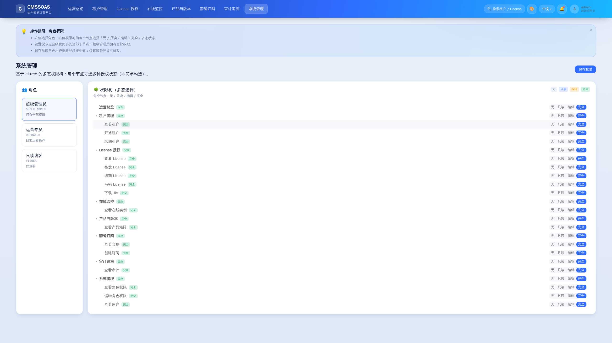
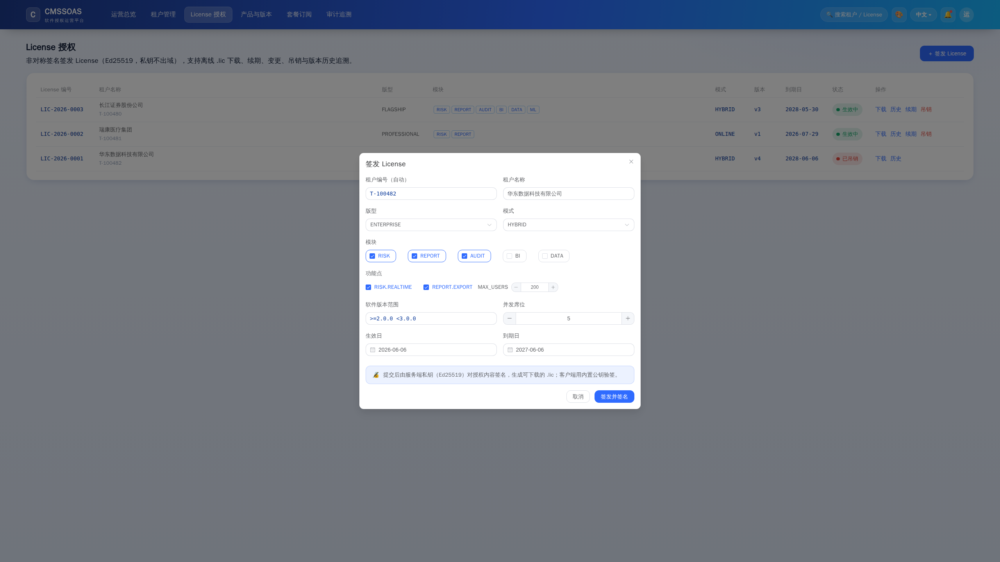
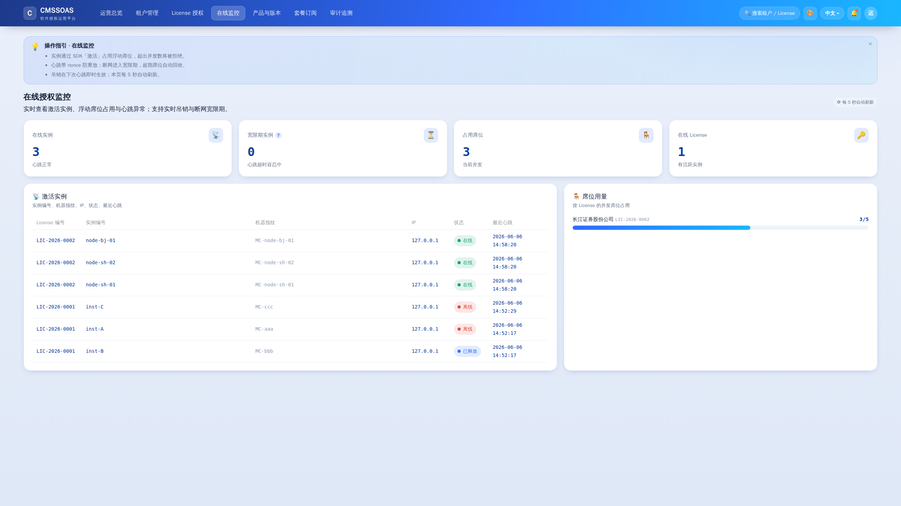
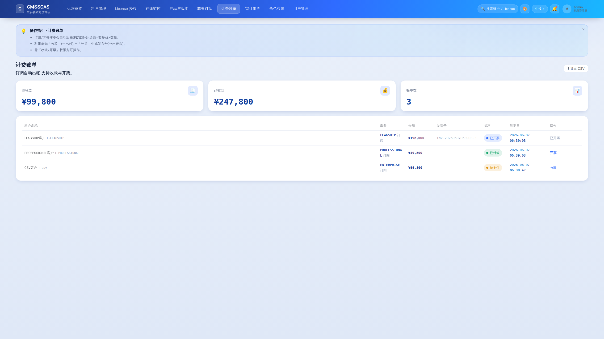

CODEMAN — Full Business-Logic Self-Test Report
Date: 2026-06-07 · Scope: P0 core chain / P1 key features / P2 UX & edge cases · Method: live runs (curl + automated tests + Playwright screenshots) Initial account:
admin / 8888· Chinese version: 自测报告.md
Summary
- P0 core chain 9/9 passed; P1 key features 13/13 passed; P2 UX & edge cases all passed.
- Automated tests: backend 8/8 (now 9/9 incl. regression), SDK 8/8, E2E 4/4.
- Found and fixed 1 real regression (activation endpoint blocked by the auth filter); added a dedicated regression test.
- 3 false alarms in the test scripts (CRL missing token, version field name, user disabled-then-login) — verified as script issues; product logic correct.
P0 — Core Chain (9/9 ✓)
| Case | Key steps | Result |
|---|---|---|
| 0.1 Env/health | start backend, /actuator/health | UP ✓ |
| 0.2 Auth | admin/8888; wrong pwd; no/with token on /api/licenses | JWT issued; wrong/no token→401; with token→200 ✓ |
| 0.3 Endpoint perms | VIEWER token calls view / issue | view→200, issue→403, admin→200 ✓ |
| 0.4 Issue license | POST /api/licenses/issue | returns licenseId + signed .lic (payload.sig) ✓ |
| 0.5 Revoke+CRL | revoke → status/CRL/heartbeat | REVOKED; in CRL; heartbeat→REVOKED (real-time) ✓ |
| 0.6 Concurrency seats | concurrency=2, activate 3 instances | first 2 OK, 3rd→409 ✓ |
| 0.7 Heartbeat replay | same nonce twice | first OK, replay→REPLAY ✓ |
| 0.8 Subscription auto-issue | Enterprise ×2 | auto-issued, concurrency=40 (20 seats×2) ✓ |
| 0.9 SDK gating | authorized/unauthorized/out-of-range/tampered | allow / deny / deny / verify-fail ✓ |
P1 — Key Features (13/13 ✓)
| Case | Result |
|---|---|
| 1.1 Onboard + email outbox | emailSent=true (queued) → async spooled ✓ |
| 1.2 One-time activation + MFA | public activation, set password + MFA bind, one-time token ✓ (after fix) |
| 1.3 Lifecycle + history diff | renew→v2, multi-version history diff ✓ |
| 1.4 Public key/algorithm | Ed25519 ✓ |
| 1.5 Grace reclaim | stop heartbeat→scheduled reclaim→online 0, state offline ✓ |
| 1.6 Online monitor | online/grace/seats KPIs + instance table ✓ |
| 1.7 Polymorphic role perms | PUT persisted (license:issue=EDIT) ✓ |
| 1.8 User management | create(mustChange)/reset/toggle, admin not disable-able ✓ |
| 1.9 Force password change | initial login→change→old 401/new 200 ✓ |
| 1.10 Catalog/plans | 4 plans, matrix v2.2/2.3/2.4, module tree ✓ |
| 1.11 SM2 (Chinese crypto) | public-key=SM2, sigAlg=SM2, SDK verify + gating ✓ |
| 1.12 Observability | /actuator/prometheus 200, application=codeman ✓ |
| 1.13 Automated tests | backend 8/8, SDK 8/8, E2E 4/4 ✓ |
P2 — UX & Edge Cases (all ✓)
| Case | Result |
|---|---|
| 2.1 Theming/2K-4K/i18n | midnight theme + English OK ✓ |
| 2.2 Font separation / inline help | monospace business data, PageHelp/HelpTip/tooltip ✓ |
| 2.3 Code-protection demo | legit run / wrong-license decrypt fail / tamper verify fail / plaintext removed ✓ |
| 2.4 Obfuscation (harden) | helper classes→a.class, entry/loaded classes kept ✓ |
| 2.5 Button-level perms | VIEWER hides issue/renew/revoke buttons ✓ |
| 2.6 Edge cases | missing field→400, unknown license→404, seat reuse after release, activate after revoke→403 ✓ |
| 2.7 Docker compose | docker compose config valid (no daemon in sandbox; containers not run) ✓ |
Defect Found & Fixed
Symptom: after adding JWT auth, a tenant admin clicking the activation link hit /api/activation/{token} and got 401 — but the admin has no account yet, blocking activation. Root cause: JwtAuthFilter guarded all /api/** (only allowed /api/auth/login), missing the activation path. Fix: allow /api/activation/** (commit 7f5a35f). Regression test: AuthIntegrationTest.activationEndpointIsPublic — anonymous access to activation must not return 401.
Key Screenshots
See web/console/shots/st-01..st-07*.png (online monitor, polymorphic permission tree, user management, license actions admin vs viewer, midnight+English, forced password change).
Re-run
cd server/license-platform && mvn test # backend 9/9
cd sdk/license-sdk && mvn test # SDK 8/8
cd web/console && npm install && npx playwright test # E2E 4/4 (backend on :8080)
LICENSE_SIGN_ALGO=sm2 java -jar server/license-platform/target/license-platform-1.0.1.jar # SM2 mode
cd examples/protected-app && bash demo.sh && mvn -Pharden -DskipTests package # code protection / obfuscationKnown Environment Constraints
- No Docker daemon in sandbox → 2.7 only validates
docker compose config. - Mail
delivery=log→ 1.1 verifies rendered spool instead of real send. - Console JVM defaults to non-UTF-8 → SDK demo Chinese shows as
?(add-Dstdout.encoding=UTF-8); does not affect pass/fail.
Screenshots (self-test evidence)

RBAC: polymorphic permission tree (none/view/edit/full)
License issue wizard License version history diff
License version history diff

Online authorization monitoring (instances / heartbeat / seats)
Billing & e-invoicing